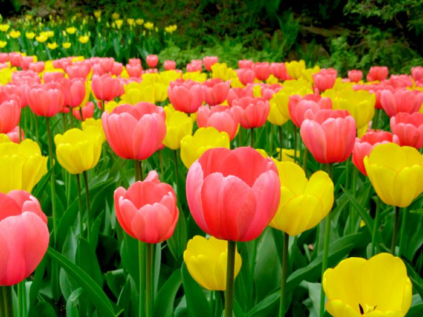
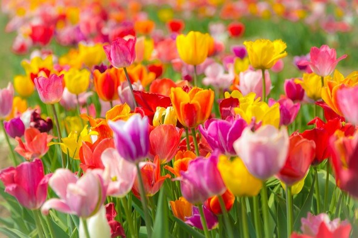

Тюльпа́н (Tulipa) — рід багаторічних рослин родини Лілійних. Численні види походять із Центральної Азії, Кавказу, Криму, Малої Азії, півдня Афганістану, Кашміру, Ірану, Іраку, Сирії, Палестини. У Західній Європі у дикому вигляді тюльпани зростають наБалканах, Піренеях, в Італії, на півдні Франції. На території України тюльпани зустрічаються у степовій зоні та серед скель Кримських гір, більшість з них є вразливими та зникаючими рослинами. Зокрема до Червоної книги України занесені такі види:тюльпан змієлистий, Шренка, скіфський, двоквітковий, бузький, дібровний, гранітний. Більшість культурних сортів походить від центральноазійських видів. За ритмом сезонного розвитку тюльпани відносяться до весняних ефемероїдів. Їх зростання і розвиток триває 80-120 днів: з початку квітня і до кінця червня, коли засихає наземна частина. Вегетація тюльпанів починається з відростанням листя у квітні, відразу після танення снігу. Цвітіння настає в середньому через 20-30 днів після початку вегетації. Тюльпани, що є типовими ефемероїдами, дуже чутливі до температури, менше до вологи і майже невибагливі до інших чинників, що впливають на зростання і розвиток рослин.
Тривалість цвітіння залежить від температури повітря. У більшості рослин вона становить 12-14 днів. В період цвітіння при тривалій дії температури понад 25 °C у тюльпанів спостерігається різке скорочення вегетації, йде відмирання квітконосного пагона і обкоркування зовнішньої луски у замінних цибулин. За нормальних температурних умов від кінця цвітіння до закінчення вегетації проходить 4-5 тижнів Стебло, квітка, листя і коріння — однорічні, тобто живуть одну вегетацію. Цибулина, на відміну від них, — 2,5 року, протягом цього часу формується її зміна — замінна, дочірня цибулина, а також дещо дрібніших цибулинок — діток. Розмножується тюльпан, окрім насіння, ще цибулинками — дітками, що розвиваються при основі стебел у землі.
Яскравість фарб, витонченість форми і простота обробітку зробили тюльпан одним з найулюбленіших садових квітів. Для озеленення садів і парків тюльпан є універсальним рослиною, сфера його використання дуже широка: тюльпани висаджують у квітниках і бордюрах, під деревами і на альпійських гірках, оформляють ними балкони і садять в вазонах на вулицях. Велике розмаїття сучасних сортів може задовольнити найвибагливіші смаки квітникарів. Серед видів і сортів тюльпанів є такі, що ідеально підходять для висадки в квіткові бордюри та на альпійські гірки та ті, що будуть чудово виглядати на фоні високорослих багаторічників або декоративних чагарників. Лише деякі декоративні рослини можуть змагатися з тюльпанами за різноманітністю форм квітки. Рослини з простою келихоподібною формою квітки добре виглядають у групових насадженнях під деревами, серед газону, з них можна створювати природні квіткові поляни.
Зазвичай тюльпани висаджують на клумби, в квітники, в бордюри або під деревами, на газоні. Традиційним і зручним стало поєднання тюльпанів з однорічними рослинами. Зазвичай на звільнені місця в квітнику висаджують підготовлену розсаду однорічних рослин, а коли літники закінчують свою вегетацію, на їх місце в жовтні знову садять тюльпани. Такий прийом часто використовується при оформленні скверів і парків, коли вся або більша частина клумби засаджується тюльпанами, а після їх відцвітання це місце займають однорічні рослини. Такий спосіб посадки непридатний для невеликих садів і дачних ділянок, але величезний килим з одноколірних тюльпанів на великих площах справляє сильне враження — це ефектний прийом, яким часто користуються озеленювачі. Якщо Ви хочете зробити свій квітник більш різноманітним і використовуєте в саду багаторічні рослини, то можна застосувати ущільнюючу посадку. У цьому випадку між зростаючими в квітнику кущами декоративних багаторічників залишають так звані кишені, які потім заповнюються тюльпанами. Тюльпани висаджують невеликими групами так, щоб по закінченні їх вегетації, коли листя тюльпанів жовтіє і в'яне, в квітнику не були помітні ці непривабливі місця. Тюльпани — традиційні рослини для зимової вигонки і незамінні для зрізки. Багато видів тюльпанів розводяться як улюблені декоративні рослини, особливо популярні вони були в XVII столітті, коли і цінувалися досить дорого.
Історія: У 1554 посланець австрійського імператора в Туреччині Огьє де Бюсбек відправив велику партію цибулин і насіння тюльпанів до Відня. Спочатку вони вирощувалися у Віденському саду лікарських рослин, директором якого був професор ботаніки Шарль де л'Еклюз (Charles de l'Ecluse, 1525–1609). Займаючись селекцією, Еклюз розсилав насіння і цибулини усім своїм друзям і знайомим. У 60-і роки XVI століття торговці і купці завезли їх в Австрію, Францію, Німеччину. З того часу почалося тріумфальне завоювання тюльпанами Європи. Спочатку тюльпани розводили при королівських дворах, вони стали символом багатства і знатності, їх почали колекціонувати. Пристрасними любителями тюльпанів були Рішельє, Вольтер, австрійський імператор Франц II, французький король Людовик XVIII.
Листки: Подовжено-ланцетове, зелене або сизувате, з гладкими або хвилястими краями і легким восковим нальотом. Жилкування дугове. Нижній лист найбільший, верхній, так званий прапор-лист — найменший. У тюльпанів Кауфмана (T. kaufmanniana), Грейга (T. greigii), Микели (T. micheliana) та їх садових форм верхня бік листя прикрашений фіолетово-бурими, пурпуровими цятками або штрихами, смугами, що надає рослинам особливу декоративність. У дорослої квітучої рослини зазвичай 2-4(5) листів, які розташовані в нижній частині стебла. У молодих рослин (до першого цвітіння) єдиний лист розвивається до кінця вегетації. Зачатки листя закладаються в заміщуваній цибулині дорослої рослини в період вегетації, а зростання триває в наступному сезоні.
Біологічні особливості: За ритмом сезонного розвитку тюльпани відносяться до весняних ефемероїдам. Їх зростання і розвиток триває 80-120 днів: з початку квітня і до кінця червня, коли засихає наземна частина. Вегетація тюльпанів починається з відростанням листя у квітні, відразу після танення снігу. Цвітіння настає в середньому через 20-30 днів після початку вегетації. Тюльпани, будучи типовими ефемероїдами, дуже чутливі до температури, менше до вологи і майже невибагливі до інших чинників, що впливають на зростання і розвиток рослин. Тривалість цвітіння залежить від температури повітря. У більшості рослин вона складає 12-14 днів. В період цвітіння при тривалій дії температури понад 25 °C у тюльпанів спостерігається різке скорочення вегетації, йде відмирання квітконосного пагона і обкоркування зовнішньої луски у замінних цибулин. За нормальних температурних умов від кінця цвітіння до закінчення вегетації проходить 4-5 тижнів. Стебло, квітка, листя і коріння — однорічні, тобто живуть одну вегетацію. Цибулина, на відміну від них, — 2,5 року, протягом цього часу формується її зміна — замінна, дочірня цибулина, а також дещо дрібніших цибулинок — діток.
Цвіте і плодоносить: Для поливання квітів використовується вода з вмістом хлору менш ніж 300 мг/л. Квіти готові до зрізання, коли набудуть вигляд повнобарвного, але закритого бутону. В сонячні дні необхідно зрізати тюльпани виключно ранком. Збирання квітів відбувається шляхом виривання цілої квітки разом із цибулькою. Квіти з цибулькою можна зберігати при температурі до 2 °С протягом 7 – 10 діб, в той час коли тюльпани без цибульки – тільки 3 – 5 доби.